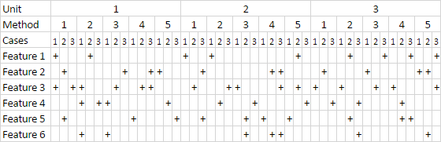

In this article I will discuss unit testing approaches, show a quick and elegant solution to unit tests complexity, benefits of having 100% code coverage with tests and how achieve it easily.
Introduction
After reading yet another article on unit testing I decided that I will create, just for an experiment, a project with 100% test coverage and see how it looks and feels like.

I never had such projects before and I discovered some interesting facts, that may be interesting to someone who is walking with us on the testing path or for someone who is just thinking.
There are some people who argue that 100% coverage is bad and is a nearly unreachable target that is impractical and “is not for the real life”. There is also a popular idea about “project maturity” and coverage requirements for different project types.
I disagree. Using techniques that I discovered during this experiment I will prefer to have a 100% coverage rather than any other number and it will be reached with less efforts than using the usual approach.
Do not test methods
Yep, this is a common knowledge but it is not precise and is not accented hard enough. People write this fact as an advice that is nice to follow but the fact is that we will never come any close to a decent coverage within a reasonable amount of time by testing methods.
Let’s be engineers, let’s count how we can have a reasonable amount of coverage within a reasonable amount of time. What good engineers do? They measure and estimate.
Let’s estimate how much code we need to test a unit with 5 methods, each of them will have 2 if statements. Two if statements will normally give 3 possible cases.
Every time we have an if statement we need to supply a different unit test environment (a combination of unit dependencies and commands issued to the unit) to make the code execute through the logical branch. How many environments we need to test the unit? 5 * 3 = we will need to setup 15 environments just for one freaking unit with 5 methods! Such a waste of time! No, this is a definitely bad idea.

OK, now it should become very clear that testing methods is not the best idea. So probably we need to test units? We write unit tests after all, so this should be better, yeah?
How about a little estimation? Let’s count all logical cases within the entire unit. 5 methods in the unit, each has 2 if statement, 5 methods * 3 cases = we need 15 test environments. Did you notice a difference? Why the hell there should be a difference at all? We can, potentially test with less environments number if our ifs are repetitive, but this is a rare case that should normally be eliminated by the Strategy pattern.
Unit tests are sick
When we test a unit we test the code that is inside of methods. But our code has a significant part that is connection between units. If there is a guarantee that two units work this does not mean that we have a guarantee that they will work together.
There is also “unit granularity”. Someone will create a 10000 line unit with tons of interconnected variables and if statements and he will try to test it (god save him). Someone other will create a lots of three-line methods that operate on immutable data almost without if statements and each unit will have 1-5 methods.
Should that two different guys use the same approach for testing? The first guy didn’t get what “decomposition” word mean so let’s let him alone, but the second guy will not benefit from unit testing as he could because most of his code consist of inter-unit connections and he will need to setup a testing environment for each line, which is not effective.
Another thing that is sick is unit’s internal dependencies. If, for example, unit A depends on unit B and unit B is not used in any other place of the application, then there is no reason to write new A(new B()). Especially if B internally depends on C, so we in fact must instantiate A by writing new A(new B(new C(), new D()), new E()) to keep A testable. Imagine instantiation of some root class that depends on the entire application’s object graph. Yes we have dependency injection pattern, we have static method constructors, but this is just another complication to handle our weak unit testing strategy.
Formal unit tests:
Are ineffective by coverage / time ratio.
Do not guarantee a correct code behavior because they do not test inter-unit communications.
Hinder refactoring. Once we wrote a test for a unit, the test will stick to the unit and we can’t refactor the unit without refactoring the test. All unit dependencies also become written in the test, so we can’t even change unit implementation details without touching its test.
Overcomplicated when it comes to dealing with unit dependencies.
A line-by-line reproduction of code in tests does not test anything. Do method-by-method tests test something? Do unit-by-unit tests test? What we’re testing at all?
So, there is a problem and there should be a solution.
Do test features
Yes, this is also a known idea. We can read it in some articles. But is this advice important? What people mean when they say “test features” (“test use cases”)? Do they mean “test features of units”? “Feature” in an abstraction without context, it is completely useless.
Let’s be engineers, let’s estimate. I’m taking my ruler again… How testing features can be more effective than testing methods? I finally came to this schema:

If we will test subsystem features then each test will cover several if cases and the test coverage will be very effective. Given this case map we can even select specific features that will touch the maximum amount of code lines. The amount of test environments that need to be created for such testing type is minimal.
When I say “subsystem” I mean a group of units that serve one purpose and can be taken as a separate part of an application. In example, a data access layer is one of such subsystems. While it should be tested without actual writes to a database it can, internally consist of tens of units.
Assumption here is that if a subsystem satisfies given requirements this mean that subsystem’s internal structure satisfies that requirements as well. If a test is a requirement then why require a specific line-by-line solution?
Surprisingly, testing subsystem features also gives a total freedom for refactoring inside the subsystem.
Cross-check
There is also a consideration about cross-checking. I think that tests should be cross-checks, not duplication-checks. Yes, I duplicated some code in a test. Does this guarantee something? No.
- A task: “Get a ball into the basket.”
- Code: “Trowing a ball.”
- Duplication test: “Is the code throwing a ball?”
- Functional test: “Was a ball thrown?”
- Cross-check test: “Hey Joe, I don’t believe my own eyes (my own code), could you please go and check if there is a ball in the basket?”
The duplication test can’t prove that the code satisfies the task requirement. The functional test is better but it does not guarantee the task requirement satisfaction as well. The cross-check can give the guarantee.
The strongest argument about writing classical unit tests I met was that they can go through all if cases while doing so with an integration test is too time-consuming. I agree. But there is a medium variant that can go through all cases fast, providing better guarantees the same time.
It looks to me that feature tests are closer to cross-checks, they provide real guarantees to their user. And if their coverage is 100% then they are clearly winning the game.
Benefits of having 100% test coverage
If a codebase is built with 100% test coverage in mind then it leads to an interesting effect. Coverage tools show lines of code that are not touched by tests. That exactly lines are either not tested, not needed or not touched because of some mistake that should be fixed. So this is an additional tool that finds bugs and helps to optimize codebase!
Unreached code can also be a sign of an ineffective test.


(Oops! A copy-pasted algorithm is too broad for the implementation! I never have null here!)
100% test coverage may not guarantee the absence of bugs. But 99% test coverage does guarantee that 1% is either fragile or simply does not work. So, the 100% coverage value is a desirable target for any project by itself.
Conclusion
During the experiment on a small project I completely threw away 2 units because test coverage showed that they are not needed to implement required features. There were also few methods that have been removed or optimized.
I understood that having a 100% test code coverage is a reasonable goal by itself and it is also a good tool for keeping codebase clean.
One should not stop testing when he sees a 100% test coverage. In example, ?: operator, written in one
line will be presented as “covered line” by a coverage tool, but in fact there are two cases that need to be tested.
A good goal is to test each subsystem feature and (when it is required) edge cases. Feature test is a strict requirement to the subsystem. This is also a known idea, but rethinking old ideas is as important as learning new. Testing features rather than units gives more profit and requires less efforts. Such tests are also easier to support.
P.S. If you’re interested, the experiment project I was talking about is ProxyPreferences. It is not perfect when it comes to tests yet. I’m too lazy to clean up all of them, so there are probably more tests than is actually needed.